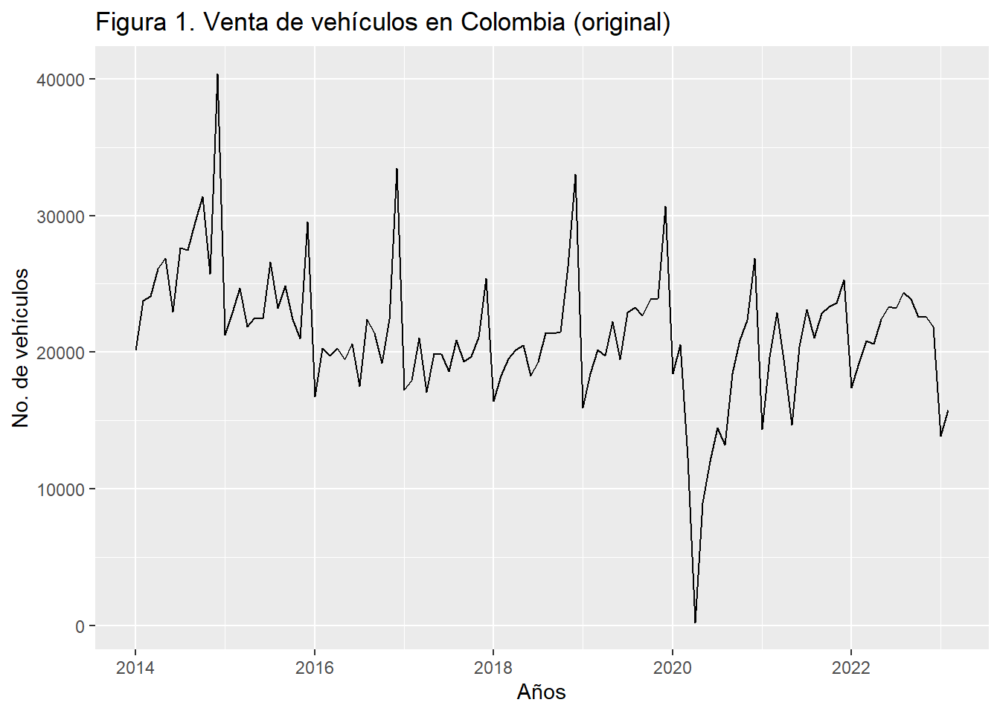
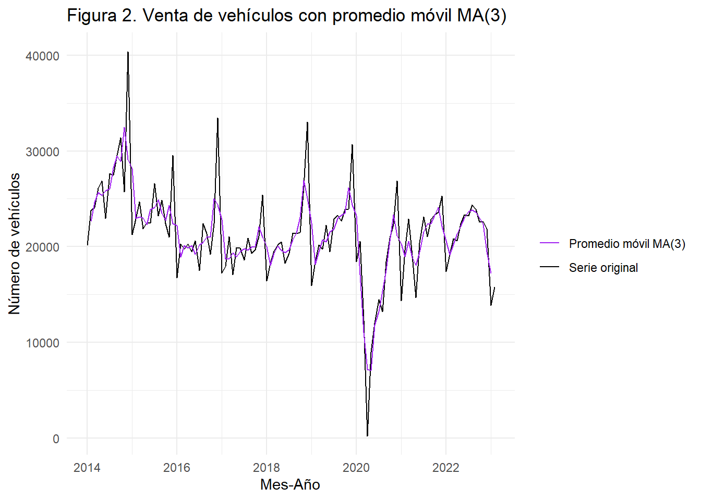
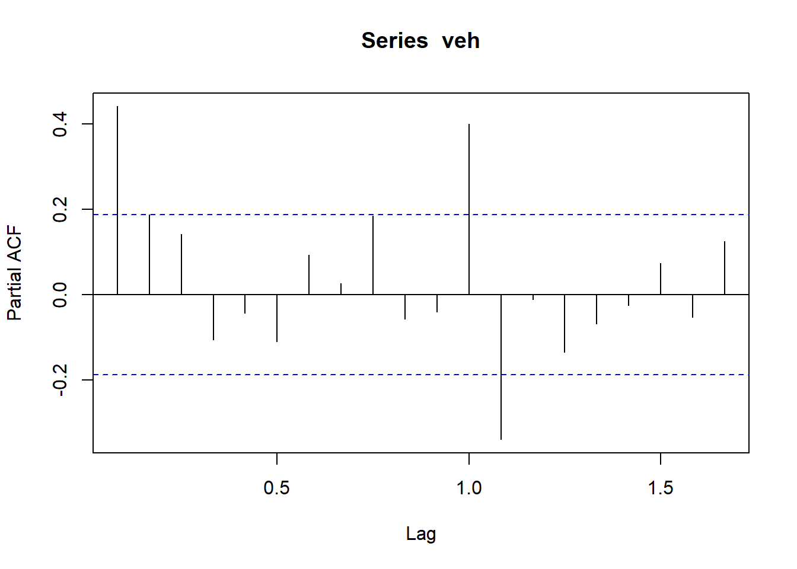
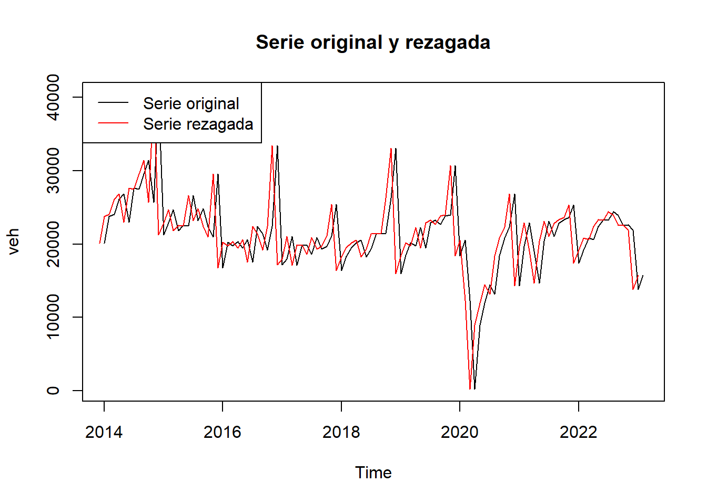
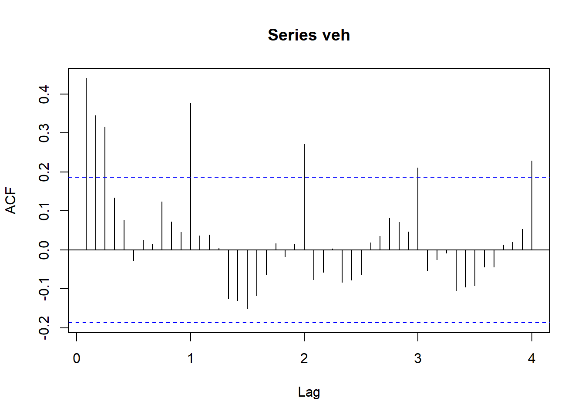

Chapter 1 Análisis Exploratorio Inicial
Primero, se llevará a cabo un análisis exploratorio de nuestra serie de interés “venta de vehículos (VEH)” para comprender mejor los datos y lograr identificar patrones y características importantes de esta variable. Así, se podran visualizar los datos y detectar patrones de tendencia, estacionalidad, ciclos, y ruido en la serie de tiempo. Esto es fundamental para elegir el modelo adecuado y para tomar decisiones informadas basadas en los datos de la serie.
# Instalar y cargar librerias necesarias para el proceso
library(fpp2)## Warning: package 'fpp2' was built under R version 4.2.3## Warning: package 'forecast' was built under R version 4.2.3## Warning: package 'fma' was built under R version 4.2.3## Warning: package 'expsmooth' was built under R version 4.2.3library(readxl)
library(forecast)# Contiene el modelo ARIMA
library(tseries) #Para series de tiempo## Warning: package 'tseries' was built under R version 4.2.3library(TSA) #Para series de tiempo## Warning: package 'TSA' was built under R version 4.2.3library(urca) #Para hacer el Test de Raiz Unitaria (detectar hay o no estacionariedad)## Warning: package 'urca' was built under R version 4.2.3library(ggplot2) #Para hacer gráficos
library(dplyr) #Para la manipulación de datos (filtrar, seleccionar, agregar, transformar)
library(stats) #Se usa para diversas pruebas estadísticas (medias,varianza, arima,etc)
library(seasonal)#Para calcular la serie ajustada de estacionalidad## Warning: package 'seasonal' was built under R version 4.2.3library(zoo) #Para calcular la serie ajustada de estacionalidad1.1 Serie original
Las variables de análisis es la venta de vehículos nuevos en Colombia. Son datos en frecuencia mensual, disponibles desde enero 2014 hasta febrero 2023.
De acuerdo a la figura 1, se puede apreciar que el comercio de vehículos a nivel nacional en los dos último años se vió fuertemente afectado porla pandemia del Covid-19 y las restricciones de aislamiento y movilidad para contener el avance de la misma, especialmente durante el mes de abril 2020. En el año 2021 y 2022 se evidencia una fase de recuperación.
base <- read_excel("C:/Users/portatil/DatosR/vehiculos_2-3.xlsx")
veh<-ts(base$VEH[1:110], frequency=12, start=c(2014,1))
autoplot(veh,frequency=12,xlab="Años",ylab="No. de vehículos",main="Figura 1. Venta de vehículos en Colombia (original)") ## Warning in ggplot2::geom_line(na.rm = TRUE, ...): Ignoring unknown parameters:
## `frequency`
1.2 Promedio móvil
El cálculo del promedio móvil es una técnica común utilizada en el análisis de series de tiempo para suavizar los datos y reducir el ruido. El objetivo es reducir la variabilidad en los datos, lo que puede hacer que las tendencias subyacentes sean más visibles. En esta caso se usará un promedio móvil de orden 3 para no perder tanta información relevante, sobretdo en los últimos dos años de análisis (2021-2022) en donde la economia nacional sufrió un choque sin precendentes. En la Figura 2. Se observa que el MA(3) suaviza la serie temporal original y elimina la mayoría de las fluctuaciones de corto plazo. Para finales del año 2022, se puede afirmar que la venta de vehículos refleja una tendencia decreciente.
library(forecast)
#Calcular promedio móvil de orden 3
promovil<- ma(veh, order = 3)
# Graficar serie original y promedio móvil
ggplot() +
geom_line(aes(x = index(veh), y = veh, color = "Serie original")) +
geom_line(aes(x = index(promovil), y = promovil, color = "Promedio móvil MA(3)")) +
labs(title = "Figura 2. Venta de vehículos con promedio móvil MA(3)",
x = "Mes-Año",
y = "Número de vehículos",
color = "") +
theme_minimal()+
scale_color_manual(values = c("Serie original" = "black", "Promedio móvil MA(3)" = "purple"))## Warning: Removed 2 rows containing missing values (`geom_line()`).
1.3 Análisis de rezagos
Para saber cuántas veces debes rezagar una serie de tiempo, es importante analizar la naturaleza de los datos y el objetivo del análisis que se está llevando a cabo. Una forma de determinar la cantidad adecuada de retrasos es mediante la prueba de autocorrelación parcial (PACF), que permite identificar los retardos significativos en una serie de tiempo.
La PACF es una medida de la correlación entre una observación y una observación retrasada, controlando el efecto de las observaciones intermedias. Un retraso significativo en la PACF puede indicar que ese número de retrasos es importante para explicar la serie de tiempo.
library(stats)
pacf_veh<- pacf(veh)
plot(pacf_veh)
En la gráfica de la PAFC anterior, se observa que un rezago es importante para explicar la serie. Por ende, a continuación aplicamos 1 reago a la serie original de vehículos:
library(stats)
rez_veh <- stats::lag(veh, k = 1)
plot(veh, main = "Serie original y rezagada")
lines(rez_veh, col = "red")
legend("topleft", legend = c("Serie original", "Serie rezagada"), col = c("black", "red"), lty = c(1, 1)) Se concluye que rezagar la serie de tiempo de vehículos ayuda a identificar patrones y relaciones que pueden ser útiles en el análisis y pronóstico de la variable.
1.4 Estacionalidad
Una forma útil de saber si la venta de vehículos tiene estacionalidad, es calcular la función acf que devuelve un gráfico que muestra los coeficientes de correlación para cada rezago. Si la serie de tiempo tiene estacionalidad, se esperaría ver picos en los coeficientes de correlación en los múltiplos de la frecuencia de la serie (por ejemplo, si la frecuencia es mensual, se esperaría ver picos en los coeficientes de correlación para los rezagos 12, 24, 36, etc.). Estos picos indicarían la presencia de patrones de repetición en la serie, lo que sugiere la presencia de estacionalidad.
En este sentido, con la gráfica de ACF de la venta de vehículos que se muestra a continuación se afirma que existe un componente estacional en la venta de vehículos, es decir, por ejemplo que la venta de vehículos en Colombia incrementa en el mes de diciembre de cada año y disminuye en enero. Este comportamiento tiene una relación estrecha con la evolución del consumo, en donde, la temporada decembrina refleja un mayor gasto por parte de los hogares colombianos.
acf(veh, lag.max = 48)